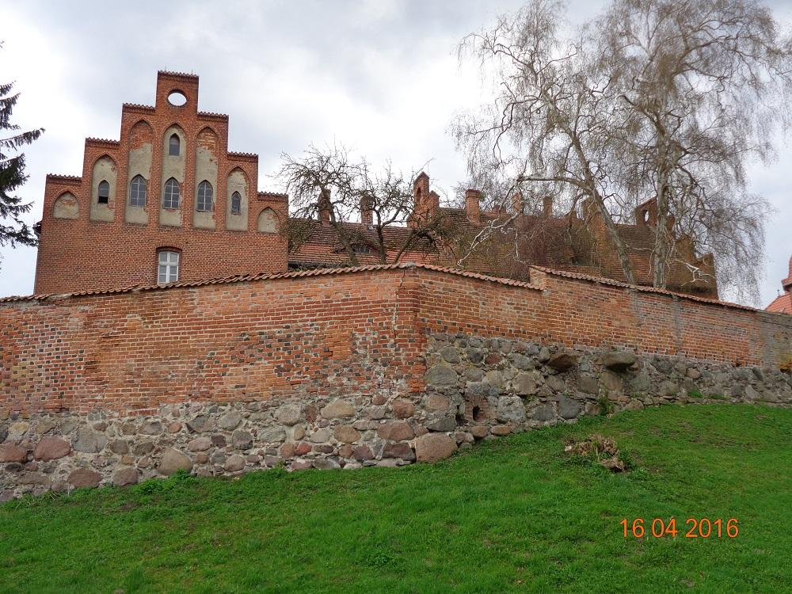
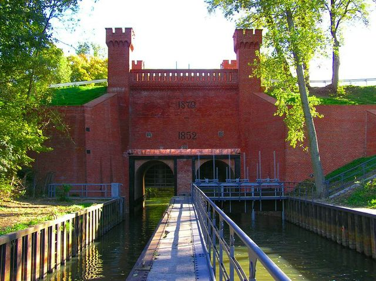
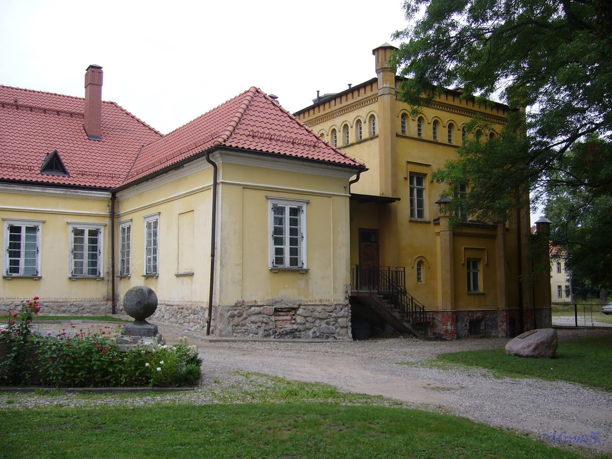

Dane o powiecie
| Siedziba | Sztum |
| Powierzchnia | 731 km² |
| Populacja | 42 284 |
Dane kontaktowe starostwa powiatowego
| Telefon | +48 xxx |
| Adres | ul. Mickiewicza 39 82-400 Sztum |
| Strona | xyz |
Atrakcje turystyczne
Zamek w Sztumie
Najatrakcyjniejszym zabytkiem Sztumu jest XIV-wieczny zamek pokrzyżacki wybudowany w latach 1326-33 jako letnia rezydencja wójta zakonnego oraz wielkiego mistrza Zakonu Krzyżackiego. Choć do dnia dzisiejszego zachowały się jedynie fragmenty dawnej twierdzy, to nadal żywe są tutaj tradycje średniowieczne. Dziedziniec zamkowy często staje się areną imprez plenerowych, turniejów rycerskich i wszelakich spektakli historycznych organizowanych przez Bractwo Rycerzy Ziemi Sztumskiej.
Źródło: polskieszlaki.plŚluza i przystań w Białej Górze
 Zdjęcie ze strony marienburg.plBudowana od XVI wieku, w celu rozdziału wód Wisły i Nogatu. System rozbudowano w początkach XX wieku. Tworzą go śluzy i jazy oraz wrota przeciwpowodziowe pomiędzy doliną Wisły a Nogatu oraz śluza na wpadającej do Nogatu rzece Liwie.
Źródło: gmina.sztum.plMuzeum Tradycji Szlacheckiej
 Zdjęcie z Google MapsMuzeum Narodowe w Gdańsku należy do najstarszych muzeów w Polsce. W Waplewie Wielkim, w zabytkowym pałacu należącym do rodu Sierakowskich, powołano do życia Muzeum Tradycji Szlacheckiej.
Źródło: mng.gda.pl